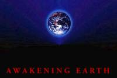

Links
| Similar in intent to this site, Compassionate Living is trying to look towards a future where we live a lifestyle intent on reducing suffering, rather than causing and ignoring it. |
|  | This is an interesting site with some thought provoking articles on global consciousness, something I am very into. If you are looking for a download to read, or have some spare internet time you're looking to burn up this is your site. |